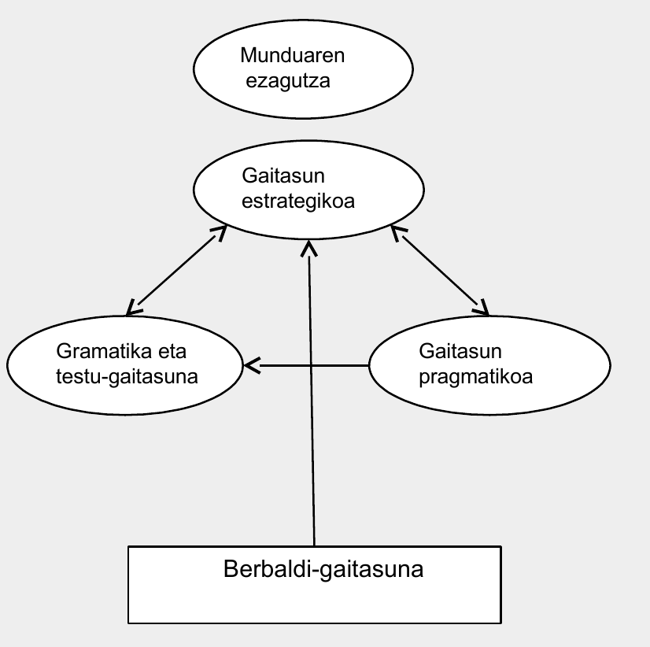
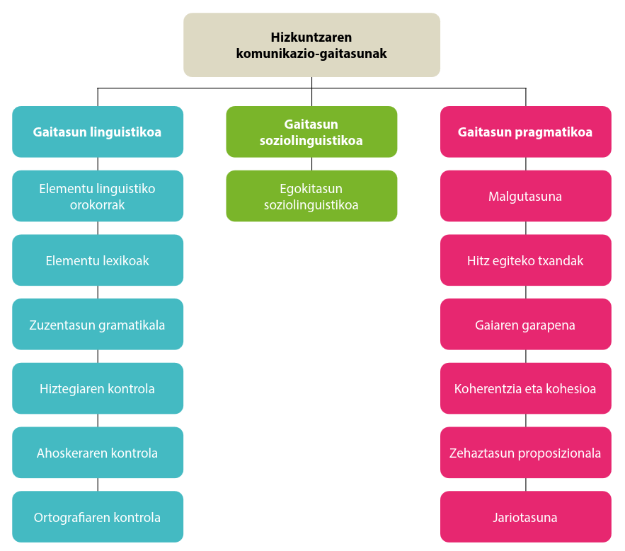

4 Hezkuntzaren lau zutabeak eta gaitasun giltzarriak hizkuntzen didaktikan
Baliabideak: (Celce-Murcia et al., 1995; Delors, 1997; Jaurlaritza et al., 2008; Organisation for Economic Co-operation eta Development (OECD), 2005; Unesco, 2005) *
Hezkuntzaren lau zutabeak eta gaitasun giltzarriak nondik datozen ikusiko da eta hizkuntzen didaktikan integratzeko moduak aztertu. Ikasleek praktika zehatzak diseinatuko dituzte, bi elementuok integratuaz.
Gaitasun gakoetan oinarritutako jarduera: Ikasleek, talde txikietan, gaitasun zerrenden arteko konparaketak egingo dituzte.
Hizkuntza komunikazio gaitasunaren inguruko jarduera: Ikasleek (ber)aztertuko dute gaur nola heltzen zaion gaiari.
Konpetentzien inguruko pedagogiaren gaineko diskurtsoa: Ikasleek aztertuko dute gaia eta gaurko ikuskerekin izan ditzakeen talkak identifikatuko dituzte ariketa bat egiteko.
Zertara dator konpetentzia, edo lehen esaten izan den moduan: gaitasuna, omen diren horren inguruko diskurtso, ikusmolde eta pedagogia “berri” guzti hori?
Gai honetan horri erantzuna ematen saiatuko gara.
4.1 Hasteko…
…zenbait galdera eta zalantza
Zenbat jende ezagutzen dugu?
Telefonoan zenbat kontaktu daukagu?
Noraino joan gara gu? Gurasoak?
Zenbat hizkuntzaren artean mugitzen gara?
Noraino eramaten gaituzte telefonoa edo ordenagailuaren erabilerak?
4.1.1 Gure munduaz
Konplexu egindako munduan bizi gara
Mundu aldakorrean bizi gara
Mundu globalizatuan bizi gara
Tentsio ugariak:
Lokala eta globala
Unibertsala eta tokikoa
Epe luzekoa eta laburrekoa
Lehiak eta aukera berdintasuna
Jakintza multzo izugarria eta norbanakoaren asimilazio gaitasun mugatu eta urria
Espiritua eta materia
…
Gizartean zalantzak sortzen dira, erantzunak behar dituztenak:
Nola jardun eraginkorki jendarte konplexu horretan?
Holako jendarte batean zer prestakuntza behar du herritar orok?
Gure munduak zelako hezkuntza behar du? galderari erantzun nahirik Delors eta abarren lana Delors (1997)
Hezkuntzari garrantzi handia (“Hezkuntza edo beharrezko utopia”)
Toki-erkidegotik mundu-jendartera
Jendarte-kohesioa eta partaidetza demokratikoa
Heziketa bizi guztian zehar
Nazioarteko lankidetza herrixka globalean
Pertsonaren hezibidean lau garabide edo ardatz
4.1.2 Historiaz
Gaiari kolpetzeko historian kokatu beharra dago, horrela, aurrez ikusitakoari gaurko markoak nola erantzun nahi dion ulertzen errazagoa izan liteke
- ikasten ikastea
-
lifelong learning; dimentsio anitzeko hezkuntza
- egiten ikastea
-
jakintza aplikatua, jendartean ekiteko
- elkarrekin bizitzen ikastea
-
lankidetzarako eta gatazkak konpontzeko gaitasunak…
- izaten jakitea
-
balioak, jarrerak
Sortu taula bat konpetentzien definizioen alderaketa aztertzeko:
Europako kontseilua
Madrileko legeak
Parisekoak
Gasteizkoak
Iruñekoak
Londresekoak
…
4.1.3 Konpetentziaren definizio batzuk:
Jakintza, trebetasunak eta jarrerak modu praktikoan integratzeko gaitasuna, arazoak konpontzeko eta egoki erantzuteko hainbat testuinguru eta egoera askotarikoetan. Bestela esan, jakintza teorikoa eta praktikoa integratzea eta aplikatzea testuinguru akademikoz kanpoko egoeratan.
Europako Hizkuntzen erreferentzia marko bateratuan: Competences are the sum of knowledge, skills and characteristics that allow a person to perform actions. (Konpetentziak dira norbanakoaren jakintzen, trebetasunen eta ezaugarrien batura, pertsonari ahalbide ematen diotenak jarduerak gauzatzeko. –(JMren itzulpena) (in http://www.coe.int/t/dg4/linguistic/Source/Framework_EN.pdf)
Gaitasuna da testuingurura egokitutako ezagutzen, trebetasunen eta jarreren multzo bat
– Europako Parlamentuaren ebazpena (2006)
Konpetentzia edukitzea da eraginkor aritzea testuinguru jakin batean.
Konpetentzia da gaitasuna edo trebetasuna zereginak burutzeko edo egoera desberdinei aurre egiteko, modu eraginkorrean, testuinguru jakin batean. Eta horretarako jarrerak, trebetasunak eta jakintzak mugitu behar dira, aldi berean eta elkarrekin erlazionaturik.
– Zabalak eta Arnauk (2007)
c) Funtsezko konpetentziak: ikasleek arrakastaz aurrera egin ahal izateko eta bizitzan zehar erronka eta desafio nagusiei aurre egin ahal izateko ezinbestekotzat jotzen diren jardunak. Pertsona guztiek beren errealizazio eta garapenerako behar dituztenak dira, bai eta herritartasun aktiboa, gizarte-inklusioa eta enplegua sustatzeko behar direnak ere.
d) Konpetentzia espezifikoak: arlo eta ikasgai bakoitzeko oinarrizko jakintza beharrezkoa den jardueretan edo egoeretan ikasleek baliatzen jakin behar duten neurriak. Konpetentzia espezifikoak alde batetik funtsezko konpetentziak eta bestetik ikasgaietako oinarrizko jakintzak eta ebaluazio-irizpideak lotzeko eta zehazteko elementuak dira.
– 77/2023 Dekretua, 2. artikulua
Konpetentziak “diseinatzeko”, hautatzeko, saio batzuk izan ziren. Horietako bat, DeSeCo izenez ezagutzen dena:
4.1.3.1 DeSeCo (Definition and Selection of Key Competencies):
What Competencies Do We Need for a Successful Life and a Well-Functioning Society? Why are competencies so important today? Globalizazioak eta modernizazioak gero eta mundu desberdinagoa eta konektatuagoa sortzen dute; horrek, adibidez, behartzen gaitu informazio asko kudeatzera, eta horretarako teknologia berrietan prestakuntzaren bat eskatzen du; ekonomiaren hazkundea hura jasateko moduarekin konbinatu behar da. Pertsonak, jendarte konplexu horretan, trebetasun zehatzak baino zerbait gehiago behar du ongi jarduteko. Kohesio soziala eta jasateko moduko garapena larriki lotuak dira jendarte guztiko jende guztiaren konpetentziekin; konpetentziak ulertu behar dira jakintzaren, trebetasunen eta jarrera eta balioen batura gisa. – OECD Education Ministers
Konpetentzien hiru dimentsio edo “kategoria handi”:
- Baliabideak interaktiboki erabiltzeko gaitasuna (ad. hizkuntzak, teknologiak)
- Talde heterogeneoetan hartu-emanean jardutea
- Nor bere gain ibiltzeko gaitasuna (autonomo jardutea)
DeSeCo txostenak baldintza batzuk ezarri zituen oinarrizko gaitasun/konpetentzia horien definizioan:
- pertsonarentzat eta jendartearentzat baliozkoak diren emaitzak erdiesten lagundu behar dute.
- lagundu behar diote pertsonari erantzuten aurrean aurki ditzakeen hainbat testuingurutako eskakizunei.
- jende ororentzat balio behar dute, ez bakarrik espezialistentzat.
4.1.3.2 Euskal Curriculuma
Sakonki helduko ez diogun arren, gure testuinguruan aipatzea merezi du: Euskal Herrian mugimendu bat izan zen, Euskal Herriak Bere Eskolaren eta beste batzuen eskutik, besteak beste Euskal Curriculum bat proposatu zuena.
Gero Hego eta Iparraldeko ikastolen curriculumaren eta Eusko Jaurlaritzaren dekretuen (12/2009) oinarrietariko bat ere izan zen, besteak beste.
Bereziki interesgarria da Europar Batasunen gomendioak jaso aurretik planteamendu koherente eta irmoa egin izana.
Gaian sakontzeko, oraindik eskuragai dagoen euren webgunea azter daiteke1
4.1.3.3 Europako kontseiluaren proposamena
Europako Kontseiluaren oinarrizko zortzi konpetentziak (key competences): marko honek zortzi konpetentzia definitzen ditu eta deskribatzen du zein diren oinarrizko jakintzak, trebetasunak eta jarrerak haietako bakoitzari lotuak. Oinarrizko konpetentziak hauek dira:
- komunikazioa ama-hizkuntzan (communication in the mother tongue)
- Komunikazioa atzerriko hizkuntzetan (communication in foreign languages)
- Konpetentzia matematikoa eta oinarrizko konpetentziak zientzian eta teknologian (mathematical competence and basic competences in science and technology)
- Konpetentzia digitala (digital competence)
- Ikasten ikastea (learning to learn)
- Jendarteko eta herritar konpetentziak (social and civic competences)
- Ekinzaletasuna eta ekimena (sense of initiative and entrepreneurship)
- Kultur oharmena eta adierazpena (cultural awareness and expression)
Oinarrizko konpetentzia hauek elkarren menpekoak dira eta enfasia egin behar da kasu bakoitzean pentsamendu kritikoan, sormenean, arazo konpontzean, arrisku balioestean, erabakimenean, eta sentimenduen kudeatze eraiki-zalean.
| Europako Kontseilua | Espainia | Nafarroa | EAE |
| communication in the mother tongue | 1. Competencia en comunicación lingüística | ||
| communication in foreign languages | 2. Competencia matemática | ||
| mathematical competence and basic competences in science and technology | 3. Competencia en el conocimiento y la interacción con el mundo físico | ||
| digital competence | 4. Tratamiento de la información y competencia digital | ||
| learning to learn | 5. Competencia social y ciudadana | ||
| social and civic competences | 6. Competencia cultural y artística | ||
| sense of initiative and entrepreneurship | 7. Competencia para aprender a aprender; | ||
| cultural awareness and expression | 8. Autonomía e iniciativa personal. | ||
| http://europa.eu/legislation_summaries/education_training_youth/lifelong_learning/c11090_en.htm | http://www.boe.es/boe/dias/2006/12/08/pdfs/A43053-43102.pdf |
Oinarrizko gaitasunetatik bat hizkuntzen bidez gauzatzen da, bai Europako kontseiluan eta bai hemen ere.
Hemen, izena: Hizkuntza-komunikaziorako gaitasuna/konpetentzia Oso ideia zabala. Zehaztapena behar du, hura ulertzera hurbiltzeko, eta haren ikas-irakaskuntza antolatzeko Zein azpigaitasun ditu konpetentzia horrek? Iritzi desberdinak daude:
4.2 Communicative competence… eta familia
Kontzeptu horren eraikuntzan askok hartu du parte eta eztabaida ugari izan da. Kontzeptuen eraikuntzaren ikuskeratik oratuko diogu:
4.2.1 Ideiaren garapenaz…

Celce-Murcia et al. (1995)

(Canale, 1983; Canale eta Swain, 1980)
Gaur egunean Europako Erreferentzia Marko Bateratuan honela irudikatzen da:

Gaur egun zerk osatzen duela ulertzen dugu? Zer lantzen dugu?
Aurkitu zer dioten hezkuntzako azken legeok (horretarako lehenengo klaseko ariketara joanda nahikoa izan behar luke ;)
Osagaiak osagai, nola zehaztuko genuke zer den hizkuntza-komunikaziorako gaitasuna? Hona Oinarrizko Curriculum Diseinutik harturiko azalpena (2010eko curriculuma)
4.– Hizkuntza-komunikaziorako gaitasuna.
Gaitasun honen funtsa hizkuntza erabiltzea da, ahozkoa zein idatzizkoa, bai errealitatea adierazi, interpretatu eta hura ulertzeko egindakoa, bai jakintza eraikitzeko eta komunikatzeko egindakoa, bai eta pentsamoldea, emozioak eta jarrerak antolatu eta norberak erregulatzeko egindakoa ere.
Gaitasun honi dagozkion jakintzek, trebetasunek eta jarrerek bide ematen dute pentsamenduak, emozioak, bizipenak eta iritziak adierazteko, elkarrizketan aritzeko eta iritzi kritikoak eta etikoak osatzeko, ideiak sortzeko, jakintza egituratzeko, diskurtsoari eta norberaren ekintzei eta egitekoei koherentzia eta kohesioa emateko, erabakiak hartzeko eta ahozko nahiz idatzizko entzunaldiez, irakurraldiez nahiz mintzaldiez gozatzeko. Horrek guztiak, gainera, autoestimua eta norberarenganako konfiantza handitzen laguntzen du.
Komunikatzeko eta elkarrizketan aritzeko, harreman eta lotura eraikitzaileak sortu behar dira pertsonekin eta ingurunearekin; orobat, kultura berrietara gerturatzea eskatzen du jarduera horrek, eta, kultura horiek ezagutu ahala, handitu egiten da kultura horiekiko ardura eta errespetua. Nabarmena da, horrenbestez, bizikidetzarako eta gatazkak konpontzeko ahalmenarekin erabat loturik dagoela hizkuntza-komunikaziorako gaitasuna.
Entzuteko, azalpenak emateko eta elkarrizketan aritzeko gai izanda, hitzezko harreman nagusien jabe egiten gara, era bateko eta besteko komunikazio-egoeretan sortutako ahozko mezuak adierazteko eta ulertzeko gaitasuna eskuratzen dugu, eta komunikazioa testuinguru bakoitzera egokitzeko ahalmena geureganatzen dugu. Hala, komunikazio-egoera bakoitzerako egokiak diren ahozko testuak sortzeko, behar bezala eta eraginkortasunez erabili behar dira hizkuntzakoak diren eta ez diren kodeak eta trebetasunak, eta komunikaziorako harremanek egoera bakoitzean bete beharreko arauak.
Irakurriz eta idatziz, indartu egiten dira informazioa bilatzeko, biltzeko eta prozesatzeko trebetasunak; hala, jarduera horiek lagundu egiten dute askotariko asmo komunikatibo edo sorkuntzakoak dituzten testuak behar bezala ulertzen, sortzen eta erabiltzen. Irakurketak erraztu egiten du idatzizko hizkuntza erabiltzeko kodea interpretatzeko eta ulertzeko prozesua, eta, gainera, plazer-, jakituria-eta fantasia-iturri da, eta beste ingurune, hizkuntza eta kultura batzuk ezagutzeko aukera ematen du. Horrek denak, komunikaziorako gaitasuna mantentzen eta hobetzen laguntzen du.
Hizkuntza-komunikazioko ekintzetako (elkarrizketa, irakurketa, idazketa, etab.) xedeak eta helburuak hautatzeko eta aplikatzeko trebetasuna zuzenean dago lotuta gaitasun honen alderdi nagusiekin; esaterako, norberaren errepresentazio mentalak egitearekin, errealitatea interpretatu eta ulertzearekin eta norberaren jakintzak eta ekintzak koherentziaz antolatu eta erregulatzearekin
Mezuak ulertzea eta komunikatzen jakitea jakintza praktikoak dira, baina hizkuntzari eta haren erabilera-arauei buruzko ezagutza erreflexiboa eduki behar dute oinarrian, eta horrek berariaz eskatzen du hizkuntza behaketarako eta azterketarako objektutzat hartzen jakitea. Era askotariko gizarte-eta kultura-testuinguruetako komunikazio-egoerei egokiak zaizkien diskurtsoak adierazteko eta interpretatzeko, beharrezkoa da hizkuntza-sistemaren funtzionamendu-arauak eta hizkuntza-interakzio egokiak izateko estrategiak ezagutzea eta behar bezala aplikatzea.
Gaitasun hori eskuratzeko, hauek ezagutu behar dira: hizkuntzarekin lotutako gizarte-ohiturak, hizkuntzaren kultura-balio eta -alderdiak, eta hizkuntzak testuinguruaren eta komunikazio-asmoaren arabera har ditzakeen aldaerak. Ahalmen hauek ere izan behar dira: beste pertsona batzuen egoeran jartzeko ahalmen enpatikoa; norberarenak ez bezalako iritziak sentikortasunez eta ikuspegi kritikoz irakurtzeko, entzuteko, aztertzeko eta aintzat hartzeko ahalmena; norberaren ideiak eta emozioak funtsean eta formaz egoki adierazteko ahalmena, eta kritika eraikitzaileak onartzeko eta egiteko ahalmena.
Atzerriko hizkuntzen komunikazio-gaitasunari dagozkion jakintza eta formalizazioa –batik bat, idatzizkoa– bestelako maila batean kokatzen dira, eta hizkuntza horietakoren batean komunikatzeko ahalmena izatea eskatzen dute. Hizkuntza horiek jakinda, aberastu egiten dira gizarte-harremanak eta norberak berezkoak ez dituen testuinguruetan mugitzeko ahalmena eskuratzen da. Atzerriko ikasleen atzerri-hizkuntzen kasuan ere, hizkuntza horiei eutsita, bultzatu eta aberastu egiten da hizkuntza anitzeko inguruneen dibertsitatea. Horrekin batera, jokabide horiek eskura jartzen dituzte informazio-, komunikazio-eta ikasketa-iturri ugari eta askotarikoak.
Laburbilduz, derrigorrezko eskolaldiaren amaieran hizkuntzarako gaitasuna behar bezala eskuratua izateko, ahozko eta idatzizko hizkuntza menderatu behar da era bateko eta besteko testuinguruetan, eta atzerriko, gutxienez, hizkuntza baten erabilera funtzionala izan.
4.2.2 Hizkuntza-komunikaziorako definizioetatik
Hizkuntza-komunikaziorako gaitasuna hizkuntza erabiltzeko trebetasuna da, hau da, kontzeptuak, sentimenduak, gertakariak eta iritziak ahozko eta idatzizko diskurtsoen bidez adierazi eta interpretatzekoa eta gizarte- zein kultura-ingurune guztietan linguistikoki elkarreragitekoa.
– Eusko Jaurlaritza: Hizkuntza-komunikaziorako Gaitasuna. Bigarren Hezkuntza
Definizioak definizio, badira definitutakoa lanketa eremura eramateko orduan adostutako kontzeptu batzuk:
Dimentsioa -> Azpigaitasunak -> Ebaluazio adierazleak
Horrela, komunikazio gaitasunean batzuk aztertzen dira segidan
4.2.2.1 Komunikazio konpetentzia gaurko ikuskera didaktiko (…eta ebaluatzailean)
Komunikazio Gaitasunean 5 dimentsio bereizten dira:
- ahozkoaren ulermena
- idatziaren ulermena
- mintzamena
- idazmena
- ahozko elkarrekintza
Dimentsio bakoitza neurtzeko, ikasketa-emaitza batzuk formulatzen dira
Ikasketa-emaitza bakoitzean, hiru betetze-maila bereizten dira (ebaluazio diagnostikoan):
- Hasierako maila (A)
- Erdi maila (B)
- Maila aurreratua (C)
4.2.3 Hizkuntza-komunikaziorako gaitasunaren dimentsioen osagaiak/azpigaitasunak
Hizkuntza-komunikaziorako konpetentzia bloke handi batzuetan egituratu da, DIMENTSIO deituak. Dimentsio horietako bakoitza AZPIKONPETENTZIA batzuetan zertzen da, eta azpikonpetentzia bakoitzerako ikasleak jakin eta egiten jakin behar duena azaltzen duten EBALUAZIO-ADIERAZLE batzuk xedatu dira.
– Eusko Jaurlaritza-Hezkuntza Saila-ISEI/IVEI: Ebaluazio diagnostikoa. Hizkuntza-komunikaziorako konpetentzia. Marko teorikoa. Vitoria-Gasteiz: EJAZN
4.2.3.1 Dimentsioak
Hizkuntza-komunikaziorako konpetentzia DIMENTSIO hauetan egituratuta dago:.
- Ahozkoaren ulermena edo entzumena
- Idatziaren ulermena edo irakurmena
- Mintzamena
- Idazmena
- Ahozko elkarrekintza
Dimentsio horien azpigaitasunak hemen ikus ditakegu
- DIMENTSIOA: AHOZKOAREN ULERMENA
- Ahozko testuen zentzu orokorra identifikatzea
- Ahozko testuen helburua antzematea
- Ahozko testuetan, proposatutako helburuei begira garrantzia duten informazioak hautatzea
- Ahozko testuen edukia kritikoki interpretatzea
- Ahozko testu-mota desberdinak hobeto ulertzeko estrategiak erabiltzea
- DIMENTSIOA: IDATZIAREN ULERMENA
- Idatzizko testuen zentzu orokorra identifikatzea
- Idatzizko testuen helburua antzematea
- Idatzizko testuetan, proposatutako helburuei begira garrantzia duten informazioak hautatzea
- Idatzizko testuen edukia kritikoki interpretatzea
- Idatzizko testu-mota desberdinak hobeto ulertzeko estrategiak erabiltzea
- DIMENTSIOA: MINTZAMENA
- Komunikazio-egoeraren ezaugarriak aintzat hartzea
- Ekoizpen-prozesua planifikatzea
- Adierazi beharrekoa egoki eta zuzen adieraztea
- Kontroleko eta egokitzapeneko estrategiak erabiltzea
- DIMENTSIOA: IDAZMENA
- Komunikazio-egoeraren ezaugarriak kontuan izatea
- Ekoizpen-prozesua planifikatzea
- Adierazi beharrekoa egoki eta zuzen adieraztea
- Kontroleko eta egokitzapeneko estrategiak erabiltzea
- DIMENTSIOA: AHOZKO ELKARREKINTZA2
- Komunikazio-trukeetan modu aktibo eta egokian parte hartzea
- Arau soziokomunikatiboak errespetatzea
- Komunikazioari eusteko eta beraren eraginkortasuna areagotzeko estrategiak erabiltzea
4.2.3.2 Agerbideak:
Adierazleak dira dimentsio horien garapenak ustez erakutsi behar duen modua.
- AHOZKOAREN ULERMENA
- IDATZIAREN ULERMENA
- MINTZAMENA:
- Ikasketaren emaitzak:
- Komunikazio-egoeraren ezaugarriak aintzat hartzea
- Ekoizpen-prozesua planifikatzea
- Adierazi beharrekoa egoki eta zuzen adieraztea
- Kontroleko eta egokitzapeneko estrategiak erabiltzea
- Ikasketaren emaitzak:
- IDAZMENA
- AHOZKO ELKARREKINTZA:
- Ikasketaren emaitzak:
- Komunikazio-trukeetan modu aktibo eta egokian parte hartzea
- Komunikazio-egoeraren ezaugarriak kontuan izaten ditu.
- Naturaltasunez esku hartzen du eta aktiboki entzuten du.
- Informazioa eta azalpenak modu ordenatuan ematen ditu.
- Ikuspegi pertsonal bat azaltzen du.
- Bere esku-hartzeari buruzko galderei modu egokian erantzuten die.
- Besteen esku-hartzeen inguruan iruzkin eta galdera egokiak egiten ditu.
- Egoerari begira erregistro egokia erabiltzen du.
- Elkarrekintzan zehar hizkuntza-aldaera egokitzen du.
- Arau soziokomunikatiboak errespetatzea
- Hizkuntza-moldeak errespetatzen ditu.
- Besteen esku-hartzeak errespetatzen ditu.
- Diskriminaziozko esaerak erabiltzea saihesten du.
- Hitz egiteko txandak errespetatzen ditu.
- Denboraren erabilera kontrolatzen du.
- Adei-legea errespetatzen du
- Komunikazioari eusteko eta haren eraginkortasuna areagotzeko estrategiak erabiltzea
- Komunikazio-trukeetan modu aktibo eta egokian parte hartzea
- Ikasketaren emaitzak:
4.2.3.3 Adierazleak eta lortze-mailak:
- Ikaskuntzarako eta gizarte-harremanetarako (hau da, ikasgelan, ikastetxean eta ingurunean eguneroko bizitzan ohikoak diren) komunikazio-trukeetan modu aktibo eta egokian parte hartzea.
Adierazleak:
- Naturaltasunez esku hartzen du eta aktiboki entzuten du.
- Komunikazio-egoeraren ezaugarriak kontuan izaten ditu.
- Informazioa eta azalpenak modu ordenatu eta egokian ematen ditu.
- Arau soziokomunikatiboak errespetatzea.
- Komunikazioari eusteko eta haren eraginkortasuna areagotzeko estrategiak erabiltzea.
| Hasierako maila | Erdi maila | Maila aurreratua |
|---|---|---|
| + Komunikazio-trukean arreta zailtasunez mantentzen du. + Bere komunikazio-trukeetan inhibizioa agertzen du. + Lagunduta, komunikazio-egoeraren ezaugarriak kontuan izaten ditu. |
+ Komunikazio-trukean arreta mantentzen du. + Naturaltasunez, komunikazio-trukeak hasten eta mantentzen ditu. + Komunikazio-egoeraren ezaugarriak kontuan izaten ditu. + Solaskidearen aurrean erantzuna modu nahiko eraginkorrean egokitzen du. + Hizkuntza-aldaera modu nahiko eraginkorrean egokitzen du elkarrekintzara. |
+ Komunikazio-trukean arreta mantentzen eta esku hartzen du. + Naturaltasunez eta modu eraginkorrean, komunikazio-trukeak hasten eta mantentzen ditu. + Komunikazio-egoeraren ezaugarrietara modu eraginkorrean egokitzen da. + Erregistro egokia erabiltzen du. + Solaskidearen aurrean erantzuna egokitzen du. + Hizkuntza-aldaera elkarrekintzara egokitzen du. |
(20).- Ikasgelan, ikastetxean eta ingurunean eguneroko bizitzan ohikoak diren komunikazio-trukeetan arau soziokomunikatiboak errespetatzea.
Adierazleak:
- Hizkuntza-moldeak errespetatzen ditu.
- Besteen esku-hartzeak errespetatzen ditu.
- Hitz egiteko txandak errespetatzen ditu.
- Adei-legea kontuan izaten du.
- Diskriminaziozko esaerak saihesten ditu.
| Hasierako maila | Erdi maila | Maila aurreratua |
|---|---|---|
| + Komunikazio-trukean errespetuzko jarrera zailtasunez mantentzen du. + Komunikazio-trukean ahotsaren tonua eta bolumena zailtasunez kontrolatzen ditu. + Jarrera eta keinuak zailtasunez kontrolatzen ditu. + Lagunduta, hitz egiteko txandak errespetatzen ditu. |
+ Komunikazio-trukean errespetuzko jarrera mantentzen du. + Komunikazio-trukean ahotsaren tonua eta bolumena noizean behin kontrolatzen ditu. + Jarrera eta keinuak noizean behin kontrolatzen ditu. + Hitz egiteko txandak ia beti errespetatzen ditu. + Noizean behin komunikazio-trukea hasteko eta bukatzeko hizkuntza-formula egokiak erabiltzen ditu. + Diskriminaziozko esaera batzuk antzematen eta zuzentzen ditu. |
+ Komunikazio-trukean lankidetza eta errespetuzko jarrera ageri du. + Komunikazio-trukean ahotsaren tonua eta bolumena kontrolatzen ditu. + Hitz egiteko txandak errespetatzen ditu. + Adei-legea errespetatzen du. Jarrera eta keinuak kontrolatzen ditu. + Komunikazio-trukea hasteko eta bukatzeko hizkuntza-formula egokiak erabiltzen ditu. + Diskriminaziozko esaerak erabiltzea saihesten du. |
- Ikasgelan, ikastetxean eta ingurunean eguneroko bizitzan ohikoak diren komunikazio-trukeetan komunikazioari eusteko estrategiak erabiltzea
Adierazleak:
- Komunikazioari eusteko konpentsazio-estrategiak erabiltzen ditu.
| Hasierako maila | Erdi maila | Maila aurreratua |
|---|---|---|
| +Ulermen-arazoak gainditzeko, bere komunikazio-trukeetan galdera soilen bat egiten du. + Elkarrekintzan zailtasunak gainditzeko, ahozkoak ez diren baliabideak erabiltzen ditu. + Komunikazio-trukean, bere esku-hartzeak arazoekin txertatzen ditu. |
+ Ulermen-arazoak gainditzeko, bere komunikazio-trukeetan galdera soilak egiten ditu. + Elkarrekintzan zailtasunak gainditzeko, ahozko baliabideak eta ahozkoak ez direnak erabiltzen ditu. + Mezuaren edukiari buruzko bere hipotesietakoren bat egiaztatu eta berresteko galdera desegokiak egiten ditu. + Komunikazio-trukean, bere esku-hartzeak modu nahiko eraginkorrean txertatzen ditu. |
+ Ulermen-arazoak gainditzeko, bere komunikazio-trukeetan galderak egiten ditu. + Elkarrekintzan zailtasunak gainditzeko, ahozko baliabideak eta ahozkoak ez direnak erabiltzen ditu. + Mezuaren edukiari buruzko bere hipotesiak egiaztatu eta berresteko galdera egokiak egiten ditu. + Komunikazio-trukean, bere esku-hartzeak egoki txertatzen ditu. |
Beheko horietatik zein ikusi/aztertu/ulertu ditugu? -munduaren ezaugarriak: aldakorra, konplexua, elkarrekin lotura handia, IKTak… -mundu konplexu eta aldakorrari erantzuteko saioa: Delors txostena (tentsioak, hezkuntzaren beharrezko utopia, bizi guztia ikasten, hezkuntzaren lau pilareak) -bizi guztiko hezkuntza, gaitasun batzuen bidez adierazia: oinarrizko gaitasunak -oinarrizko gaitasunak zer diren eta nola formulatu diren esparru desberdinetan (Europan, estatuan, …) -hizkuntza-komunikaziorako konpetentzia, oinarrizko gaitasun bat -gaitasun horren azpigaitasun batzuk (testuak aztertzeko orduan kontuan hartzeko mailen oinarria) -gaitasun hori nola formulatzen den EAEko curriculum dekretuan -gaitasun horiek ebaluatzeko, xehetasun batzuk
- Hezkuntzaren lau pilareak.
- Bizi guztiko ikasketa.
- Zer eta zein dira oinarrizko konpetentziak?
- Zer ezaugarri izan behar dituzte oinarrizko konpetentziek?
- Oinarrizko konpetentzia bat: hizkuntza-komunikaziorako konpetentzia.
- Zer da konpetentzia hori?
- Zer ezaugarri edo osagai ditu?
- Konpetentzia hori, Euskal Herriko hizkuntzen markoan nola gauzatzen da?
Azter-materiala:
“Delors txostena”
Hezkuntza, Unibertsitate eta Ikerketa Saila (2016). Haur hezkuntzarako, lehen eta bigarren hezkuntzarako eta batxilergorako dekretu kurrikularrak Euskal Autonomia Erkidegoan. Vitoria-Gasteiz: EJAZN
Larrea, K.; Maia, J. (2010). Galdera-erantzun batzuk hizkuntzaren didaktikaz. UPV-EHU. Argitalpen elektronikoa: In http://testubiltegia.ehu.es/Galde-erantzun-hizkuntz-didaktika
Europako Kontseilua. Oinarrizko konpetentziak (key competences): http://europa.eu/legislation_summaries/education_training_youth/lifelong_learning/c11090_es.htm (ikusi zein diren oinarrizko konpetentziak eta haien azalpena)
Hizkuntzen Europako erreferentzia marko Bateratua (hizkuntza-komunikaziorako konpetentziak) (5. kapituluan gaitasunaren osagaiak ageri dira)
Ruiz Bikandi, Uri (2010). Bigarren hizkuntzaren didaktika Haur eta Lehen Hezkuntzan. Bilbo: UPV-EHUAZN (4. kapitulua: 103-132 or.)